The goal of this article is to discuss the
er_plot_theme() function, used to control the surface
appearance of plots. In contrast to the er_plot_add_*()
functions and their associated builder functions, which can change
substantive features of the plot, the role of
er_plot_theme() is to control labels, axis limits,
palettes, plot titles, and other thematic aspects to the plot.
library(erplots)
library(erglm)
mod <- erglm_model(ae1 ~ aucss, erglm_data, family = binomial())
mod_strat <- erglm_model(ae1 ~ aucss + sex, erglm_data, family = binomial())
mod_gaussian <- erglm_model(biomarker_change ~ aucss, erglm_data, family = gaussian())Every example below reuses the same stratified plot:
erglm_data |>
er_plot(aucss, ae1, stratify_by = sex) |>
er_plot_add_model(mod_strat) |>
er_plot_add_quantiles() |>
er_plot_add_data() |>
plot()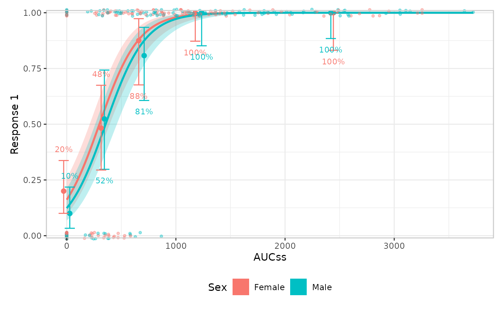
er_plot_theme() slots into the same pipeline anywhere
after er_plot() – its arguments are read lazily at build
time, so it doesn’t matter whether it comes before or after the layer
functions. Every argument defaults to NULL, meaning “leave
whatever was set before unchanged”.
Labels
xlab/ylab relabel the exposure/response
axes; strata_lab relabels the stratification legend (this
errors if stratify_by wasn’t set in er_plot()
– there’s no legend to label):
erglm_data |>
er_plot(aucss, ae1, stratify_by = sex) |>
er_plot_add_model(mod_strat) |>
er_plot_add_quantiles() |>
er_plot_add_data() |>
er_plot_theme(
xlab = "Steady-state AUC",
ylab = "Adverse event (1)",
strata_lab = "Sex"
) |>
plot()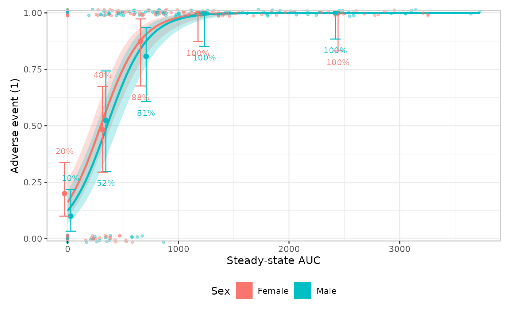
Plot-level text
title/subtitle/caption add the
usual plot-level annotations, via
patchwork::plot_annotation():
erglm_data |>
er_plot(aucss, ae1, stratify_by = sex) |>
er_plot_add_model(mod_strat) |>
er_plot_add_quantiles() |>
er_plot_add_data() |>
er_plot_theme(
title = "Adverse event vs. exposure",
subtitle = "Stratified by sex",
caption = "Source: erglm_data"
) |>
plot()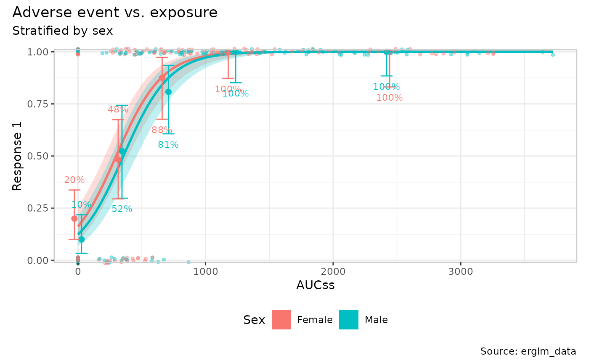
Axis limits
xlim/ylim override the exposure/response
axis limits that er_plot() otherwise computes automatically
from the data:
erglm_data |>
er_plot(aucss, ae1, stratify_by = sex) |>
er_plot_add_model(mod_strat) |>
er_plot_add_quantiles() |>
er_plot_add_data() |>
er_plot_theme(ylim = c(-0.1, 1.1)) |>
plot()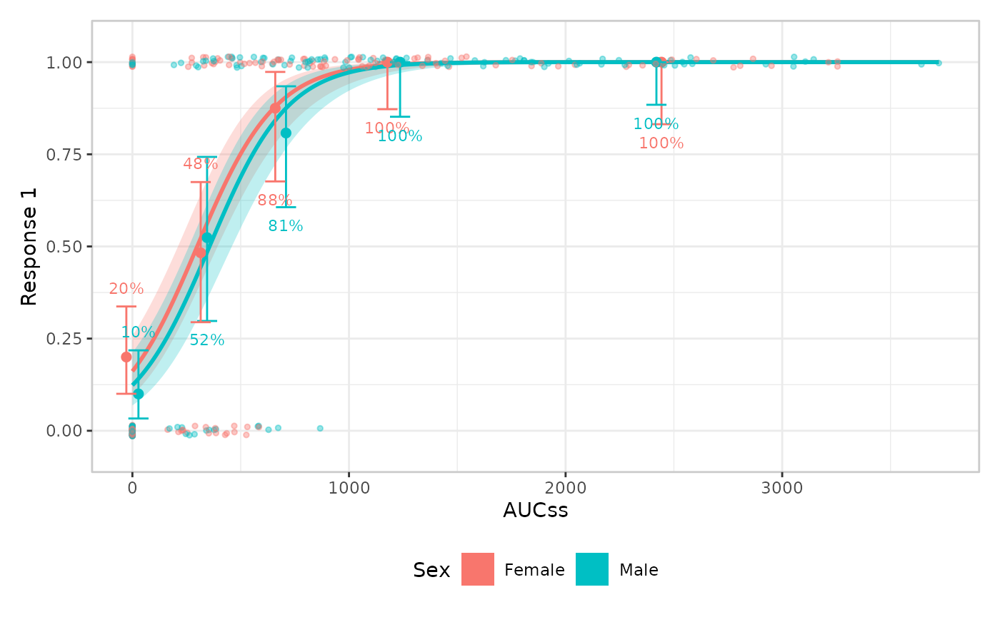
Visual theme
theme_base swaps out the overall ggplot2 theme (default
ggplot2::theme_bw()); theme_extra replaces the
small set of additional tweaks erplots applies on top (by default, a
panel border plus legend.position = "bottom"). Supplying
theme_extra replaces that default rather
than adding to it, so re-include anything you want to keep:
erglm_data |>
er_plot(aucss, ae1, stratify_by = sex) |>
er_plot_add_model(mod_strat) |>
er_plot_add_quantiles() |>
er_plot_add_data() |>
er_plot_theme(
theme_base = ggplot2::theme_minimal(),
theme_extra = ggplot2::theme(legend.position = "right")
) |>
plot()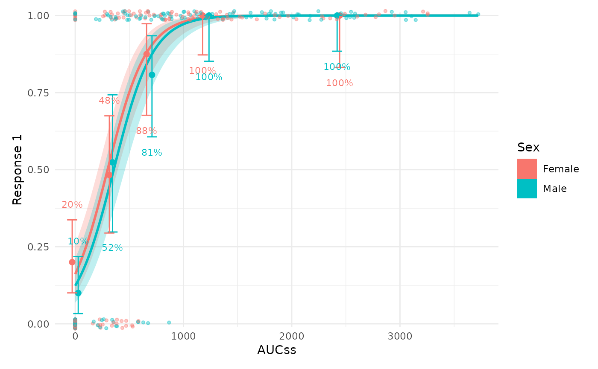
Discrete colour/fill palette
color_discrete/fill_discrete take a
discrete ggplot2 scale object (e.g. from
ggplot2::scale_colour_brewer() or
ggplot2::scale_colour_viridis_d()) and apply it wherever
colour/fill is genuinely mapped to the
stratification variable:
erglm_data |>
er_plot(aucss, ae1, stratify_by = sex) |>
er_plot_add_model(mod_strat) |>
er_plot_add_quantiles() |>
er_plot_add_data() |>
er_plot_theme(
color_discrete = ggplot2::scale_colour_brewer(palette = "Dark2"),
fill_discrete = ggplot2::scale_fill_brewer(palette = "Dark2")
) |>
plot()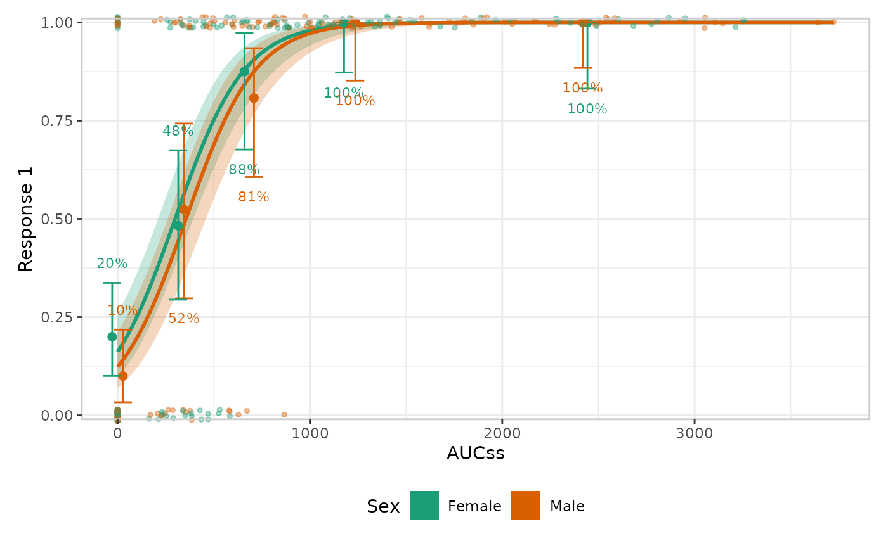
color_discrete/fill_discrete are left alone
wherever colour/fill means something other
than strata – e.g. er_style_data_hex()’s density fill,
below.
Stratified quantile spacing
dodge_width adjusts the horizontal separation between
strata within each quantile bin. This is a theme-level setting, because
it controls the layout of stratification across the quantile layer
rather than the look of any single builder.
erglm_data |>
er_plot(aucss, ae1, stratify_by = sex) |>
er_plot_add_model(mod_strat) |>
er_plot_add_quantiles(style = er_style_quantile_errorbar) |>
er_plot_theme(dodge_width = 0.15) |>
plot()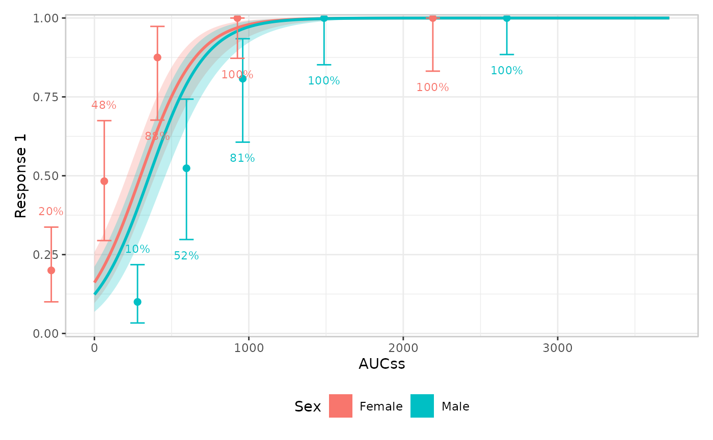
Continuous colour/fill palette
color_continuous/fill_continuous are the
symmetric counterpart, scoped to aesthetics mapped to something
continuous other than the stratification variable.
er_style_data_hex()’s bin-density fill is the
one built-in example (a continuous/count response’s response-coloured
data layer is the other, but there’s currently no built-in
“panel”-layout builder for it – see
vignettes/articles/extending.Rmd for writing a custom
one).
Left unstyled, er_style_data_hex() already supplies its
own default – a light-grey-to-navy gradient that fades toward the panel
background as a cell’s count approaches zero, rather than ggplot2’s own
default mid-intensity blue:
erglm_data |>
er_plot(aucss, biomarker_change) |>
er_plot_add_model(mod_gaussian, style = er_style_model_line) |>
er_plot_add_data(style = er_style_data_hex) |>
plot()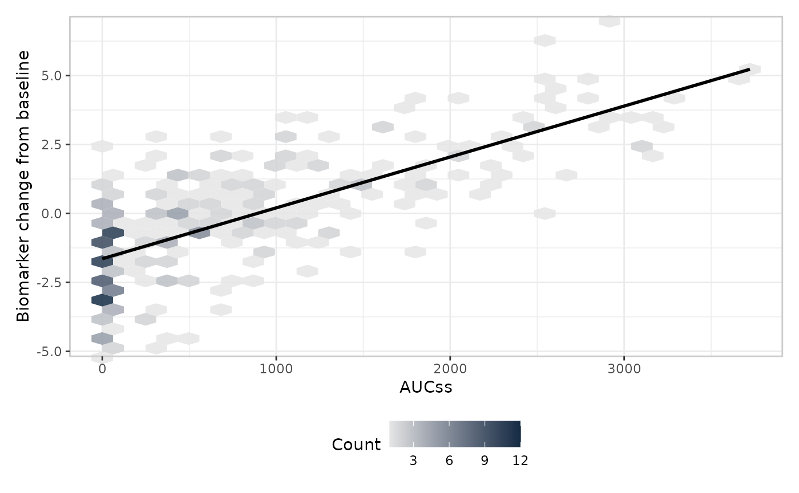
fill_continuous overrides that default wherever it’s
set:
erglm_data |>
er_plot(aucss, biomarker_change) |>
er_plot_add_model(mod_gaussian, style = er_style_model_line) |>
er_plot_add_data(style = er_style_data_hex) |>
er_plot_theme(fill_continuous = ggplot2::scale_fill_viridis_c()) |>
plot()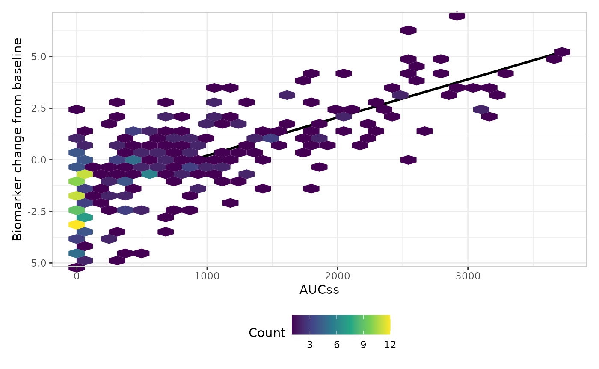
As with color_discrete/fill_discrete,
color_continuous/ fill_continuous only ever
touch the aesthetic role they name – supplying
fill_continuous here has no effect on a discrete
fill mapping elsewhere in the same plot (e.g. a stratified
model ribbon’s fill = strata), and vice versa for
fill_discrete.
Formatters
format_p/format_percent/format_number
control how the summary and quantile layers format their labels –
typically a scales::label_*() call:
erglm_data |>
er_plot(aucss, ae1) |>
er_plot_add_model(mod) |>
er_plot_add_quantiles() |>
er_plot_add_summary(model = mod) |>
er_plot_theme(
format_p = scales::label_pvalue(accuracy = .0001),
format_percent = scales::label_percent(accuracy = .1)
) |>
plot()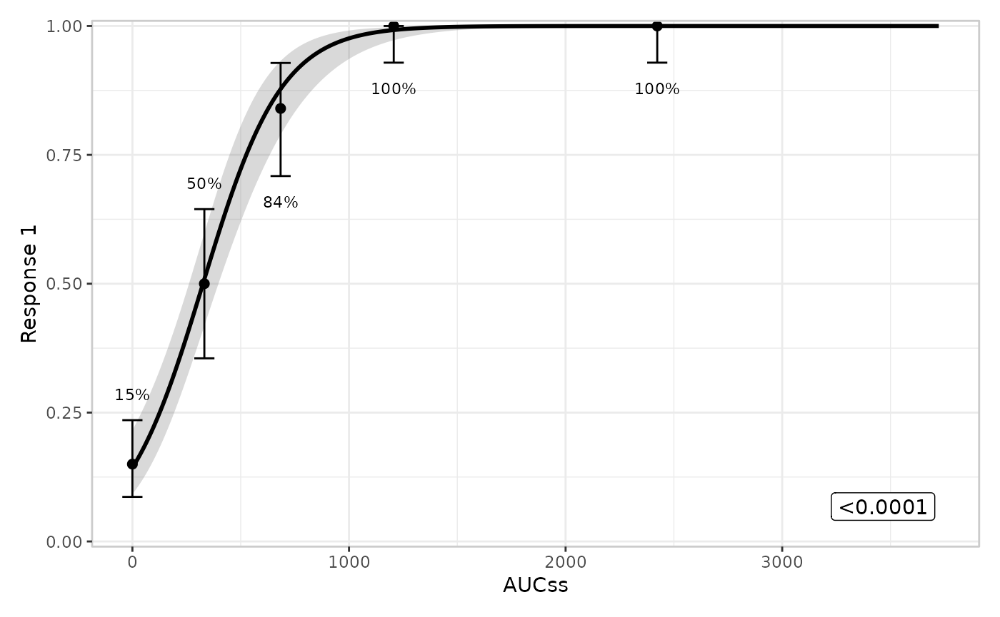
Legend key glyph
draw_key controls the glyph ggplot2 draws in the legend,
e.g. a point instead of the default filled rectangle:
erglm_data |>
er_plot(aucss, ae1, stratify_by = sex) |>
er_plot_add_model(mod_strat) |>
er_plot_add_data() |>
er_plot_theme(draw_key = ggplot2::draw_key_point) |>
plot()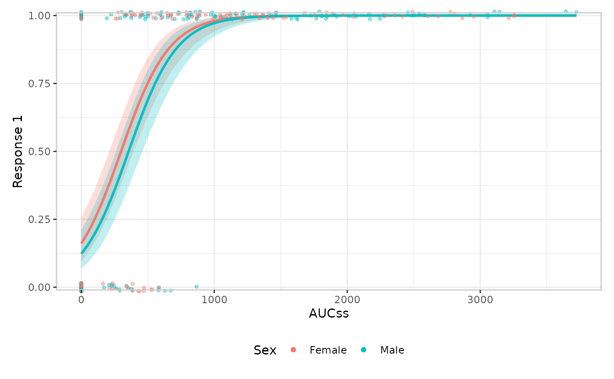
Panel heights
height_base/height_data/height_group
set the relative heights patchwork gives to the main panel, any data
panels, and any group panels – supplying only one leaves the other two
unchanged:
erglm_data |>
er_plot(aucss, ae1) |>
er_plot_add_model(mod) |>
er_plot_add_quantiles() |>
er_plot_add_groups(sex) |>
er_plot_theme(height_group = 5) |>
plot()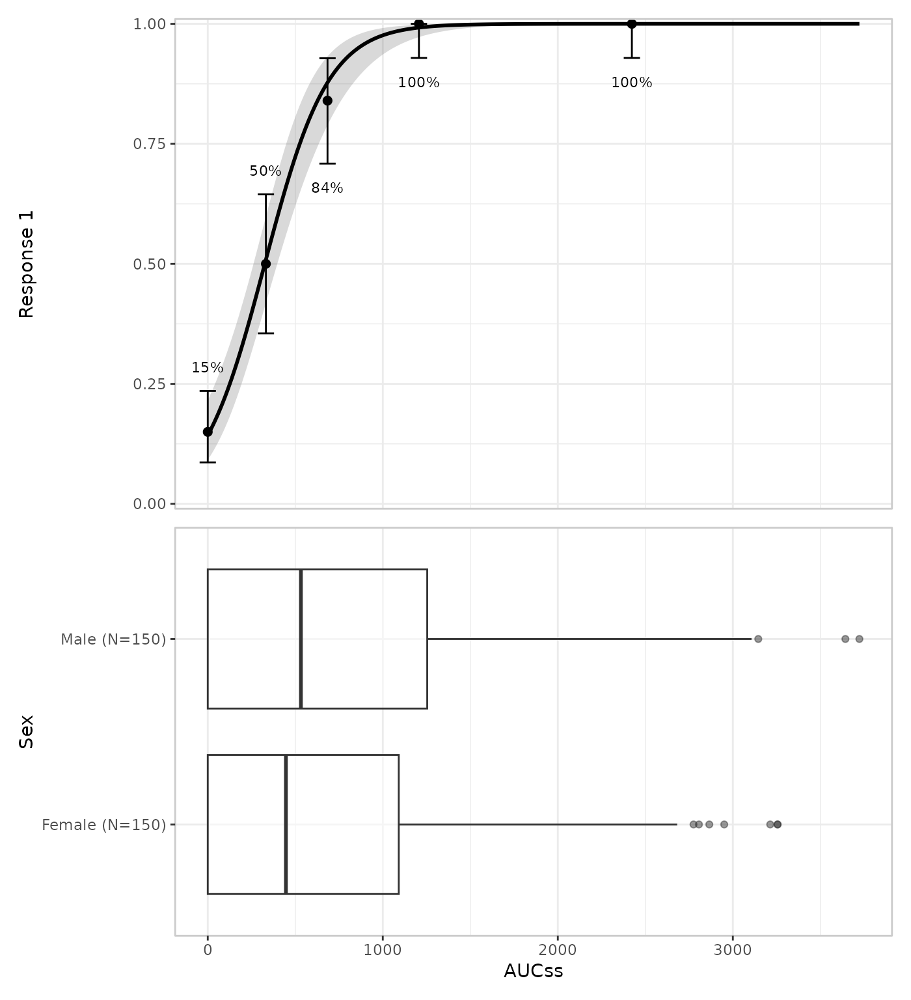
Calling er_plot_theme() more than once
Every argument defaults to NULL, so repeated calls
accumulate rather than replace: each call only touches the arguments it
actually supplies, the same merging behaviour as
ggplot2::theme() itself. This makes it natural to build up
theming incrementally, e.g. once for labels and again later for the
palette:
erglm_data |>
er_plot(aucss, ae1, stratify_by = sex) |>
er_plot_add_model(mod_strat) |>
er_plot_add_data() |>
er_plot_theme(xlab = "Steady-state AUC") |>
er_plot_theme(color_discrete = ggplot2::scale_color_brewer(palette = "Dark2")) |>
plot()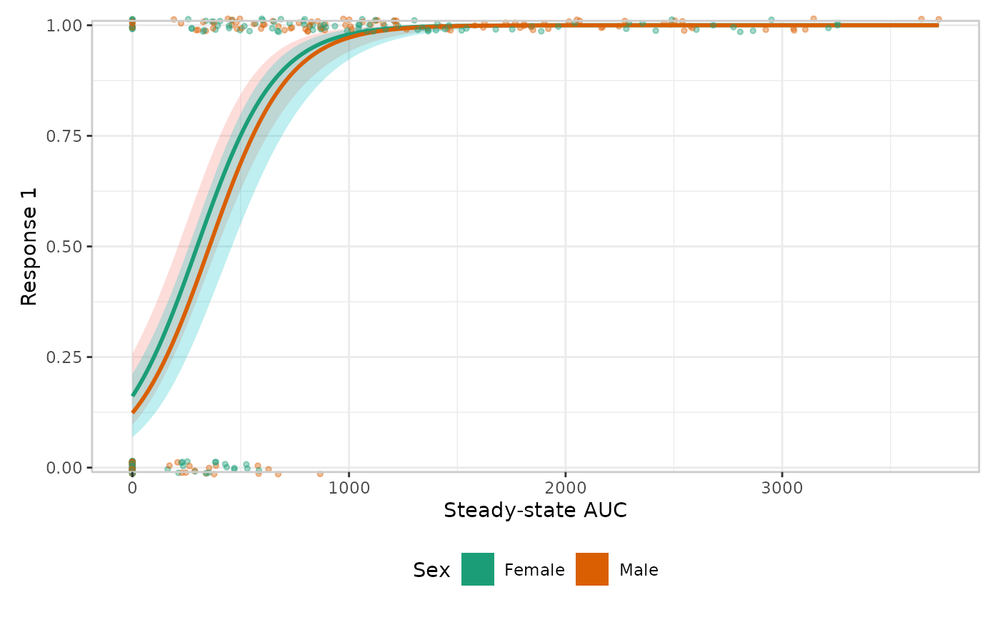
Where to next
-
The plotting grammar explains the
layer-composition rules
er_plot_theme()deliberately doesn’t touch. -
Extending erplots shows how to write a
custom
stylebuilder, if changing what’s drawn – rather than how it looks – is what you need.